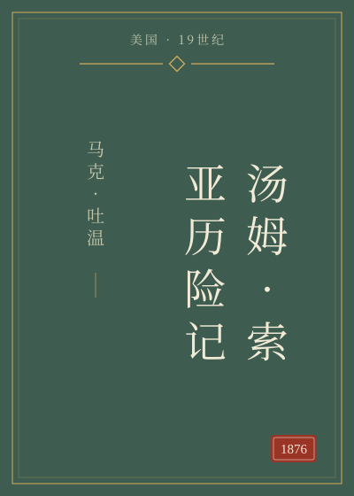
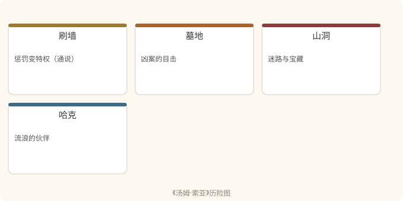

汤姆·索亚历险记
一、基本信息
| 作者 | 马克·吐温 |
|---|---|
| 成书/出版 | 1876年出版（作者页 B045/B020 口径：汤姆·索亚历险记（1876）） Mark Twain — Encyclopaedia Britannica（百科全书） |
| 国别/地区 | 美国 |
| 时代 | 近代 · 19世纪 |
| 体裁 | 长篇小说 |
| 语言 | 英语 |

《汤姆·索亚》历险图（主题·结构图）
二、创作背景
作者页（B045/B020）：马克·吐温 major_works 载'汤姆·索亚历险记（1876）'（作者页定位，详见 hakebei 条核对）。
题材（通说待核）：密西西比河畔小镇少年的顽童历险——洞穴寻宝与'海盗'梦。
三、内容脉络
刷墙名场面：把惩罚变成特权（通说待核）。
墓地的凶案目击与法庭作证（通说待核）。
山洞迷路并找到宝藏（通说待核）。
四、主要人物表
| 人物 | 身份 | 说明 |
|---|---|---|
| 汤姆·索亚 | 顽童 | （通说待核） |
| 哈克贝利·费恩 | 流浪儿 | 续集主角（通说待核） |
五、主题与艺术特点
- 童年自由的颂歌（通说）。
- 小镇社会的讽刺（通说）。
- '孩子视角'的叙事（通说）。
六、影响与评论
- 作者页：马克·吐温代表作（B045/B020 作者页口径）。
Mark Twain — Encyclopaedia Britannica（百科全书） - 《哈克贝利·费恩历险记》的前篇（通说）。
Mark Twain — Encyclopaedia Britannica（百科全书）
七、阅读建议
难点
- 密西西比河方言。
- '孩子气'的幽默理解。
- 《汤姆·索亚历险记》（人民文学出版社，通说待核）。
- 英文原版（公有领域）。
先本作后《哈克贝利·费恩历险记》。
八、待核实
- 1876年出版（American Publishing Company说）核对。
- 刷墙/洞穴情节核对。
- 波莉姨妈人名待核。
本页主要来源
- Mark Twain — Encyclopaedia Britannica（百科全书）
- Adventures of Huckleberry Finn — Encyclopaedia Britannica（百科全书）
马克·吐温的其他收录作品：哈克贝利·费恩历险记